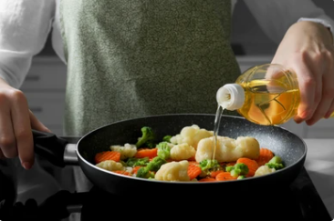

While vegetable oils are commonly used in cooking and food production, there are compelling reasons to reconsider their use. From health concerns to environmental impacts, there are various factors that suggest avoiding vegetable oils in favor of healthier and more sustainable alternatives.

History
Vegetable oils have a long history of use, dating back to ancient civilizations. The earliest evidence of oil extraction comes from the use of olive oil in the Mediterranean region, which dates back to around 2000 BCE. Olive oil was not only used for cooking but also for religious purposes and cosmetics.
[1]
In ancient Egypt, sesame oil was also used extensively, both for culinary and medicinal purposes. Sesame seeds were harvested around 1600 BCE, and oil extraction techniques were developed to produce a stable and long-lasting oil.
[2]
The use of palm oil began in West Africa, where the oil palm tree (Elaeis guineensis) has been cultivated for centuries. Palm oil became an important trade commodity during the 15th century, following the exploration of Africa by European traders.
[3]
With the advent of industrialization in the 19th century, the production of vegetable oils became more widespread. Advances in extraction technology, such as the use of hydraulic presses and later solvent extraction, allowed for the mass production of oils like soybean, canola, and sunflower oil.
[4]
The 20th century saw a significant increase in the use of vegetable oils in processed foods. This period marked the rise of partially hydrogenated oils, which were promoted for their extended shelf life and stability. However, the health risks associated with trans fats led to a reevaluation of these oils.
[5]
Health Concerns
One significant health concern related to vegetable oils is their high omega-6 fatty acid content. Excessive omega-6 intake can disrupt the balance between omega-3 and omega-6 fatty acids in the diet. This imbalance is associated with increased inflammation and a higher risk of chronic conditions, including cardiovascular diseases.
Many vegetable oils, like soybean and corn oil, are heavily processed and involve the use of high heat and chemicals. This processing can reduce their nutritional value and introduce potentially harmful substances.
[6]
Impacts On The Environment
The production of vegetable oils can also have significant environmental impacts. For example, the cultivation of palm oil has been linked to deforestation, habitat destruction, and loss of biodiversity.
[7] These practices contribute to climate change and threaten wildlife populations.
Then, What Should I Use?
To lessen these issues, it is beneficial to explore alternative cooking oils that are both healthier and more environmentally friendly. For instance, extra virgin olive oil is rich in monounsaturated fats and antioxidants, making it a heart-healthy option.
[8]
Coconut oil is another alternative that has gained popularity. Despite its saturated fat content, coconut oil contains medium-chain triglycerides, which are metabolized differently than other fats and may offer health benefits.
[9]
Avocado oil is also a viable substitute, known for its high monounsaturated fat content and stability at high cooking temperatures. This oil can be a great addition to a balanced diet and supports overall health.
[10]
For those concerned about the environmental impact of their food choices, opting for oils that are certified organic or sustainably sourced can help reduce one's ecological footprint.
[11]
Additionally, exploring plant-based oils such as flaxseed oil, which is high in omega-3 fatty acids, can help address the imbalance caused by excessive omega-6 intake from vegetable oils.
[12]
Reducing the consumption of highly processed vegetable oils can also contribute to better metabolic health.
[13]
Transitioning to a diet with less dependence on vegetable oils is a big and hard change. You can prepare your meals using methods that minimize the need for vegetable oils. Instead, you can use butter, animal fats (e.g., suet, tallow) or any cold-pressed vegetable oils. Educating oneself about the nutritional content of different oils and fats can help make informed dietary choices. Understanding the benefits and drawbacks of various oils can lead to better health outcomes.
[14]
Conclusion
In conclusion, while vegetable oils have been a staple in many kitchens for years, there are compelling reasons to reconsider their use. Health concerns, environmental impacts, and the availability of better alternatives all point towards making more informed choices about the oils used in cooking. By adopting healthier and more sustainable practices, individuals can contribute to improved health outcomes and environmental protection. Embracing alternatives to vegetable oils is a proactive step towards a healthier and more sustainable future.